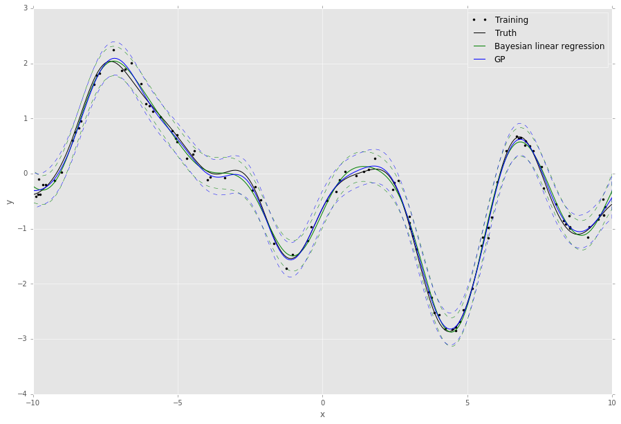
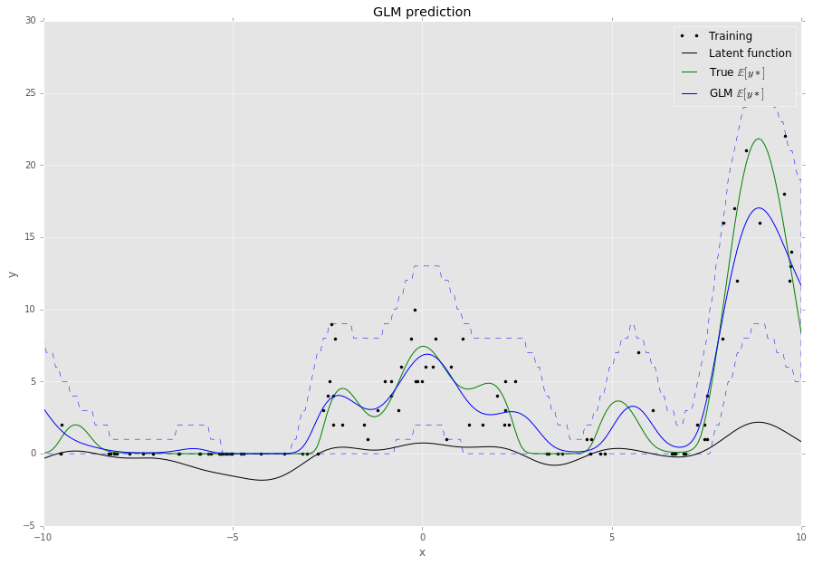

Quickstart Guide¶
To install, simply run setup.py:
$ python setup.py install
or install with pip:
$ pip install git+https://github.com/nicta/revrand.git
Refer to Installation for advanced installation instructions.
Have a look at some of the demo notebooks.
Bayesian Linear Regression Example¶
Here is a very quick example of how to use Bayesian linear regression (Standard Linear Model) with optimisation of the likelihood noise, regularizer and basis function hyperparameters.
Assuming we already have training noisy targets y, inputs X, and some
query inputs Xs (as well as the true noiseless function f):
import matplotlib.pyplot as pl
import numpy as np
from scipy.stats import gamma
from revrand import StandardLinearModel, Parameter, Positive
from revrand.basis_functions import LinearBasis, RandomRBF
...
# Concatenate a linear basis and a Random radial basis (GP approx)
init_lenscale = Parameter(gamma(1), Positive()) # Random starts sampling
basis = LinearBasis(onescol=True) \
+ RandomRBF(nbases=300, Xdim=X.shape[1], init_lenscale)
# Learn regression parameters and predict (by default, this will evaluate
# 100 random values for the length scale, variance and regularizer before
# starting optimisation from the best candidates)
slm = StandardLinearModel(basis)
slm.fit(X, y)
Eys, Vys = slm.predict_moments(Xs)
# Training/Truth
pl.plot(X, y, 'k.', label='Training')
pl.plot(Xs, f, 'k-', label='Truth')
# Plot Regressor
Sys = np.sqrt(Vys)
pl.plot(Xs, Eys, 'g-', label='Bayesian linear regression')
pl.fill_between(Xs, Eys - 2 * Sys, Eys + 2 * Sys, facecolor='none',
edgecolor='g', linestyle='--', label=None)
pl.legend()
pl.grid(True)
pl.title('Regression demo')
pl.ylabel('y')
pl.xlabel('x')
pl.show()
This script will output something like the following,
The default behaviour of the algorithms in revrand is to randomly sample and evaluate these hyperparameters before starting optimization from the best random candidates. This is because the objective functions may be non-convex with respect to these parameters, and in this way revrand can achieve some robustness to bad initializations.
Note
All of the hyperparameters in revrand are initialised using Parameter
objects. These objects contain information on the bounds of the values of
these hyperparameters, as well as how to intialize them. For instance,
>>> from revrand import Parameter, Bound
>>> hyper = Parameter(1., Bound(0.5, 100))
tells the optimizer to bound the feasible range of the hyperparameter between 0.5 and 100, with an initial value of 1. Futhermore,
>>> from revrand import Parameter, Positive
>>> from scipy.stats import gamma
>>> hyper = Parameter(gamma(1., scale=10), Positive())
tells the optimizer it can use random starts with this hyperparameter,
and to draw these random starts from a gamma distribution with a shape of
1, and a scale of 10. If random starts are not used, then the expected
value (10) of this distribution is used as the initial value. Also,
Positive() indicates the value of the parameter must be within (0,
inf).
See Bound and Parameter Types and Optimization for more information on how to use these random initializers.
Bayesian Generalized Linear Model Example¶
This example is very similar to that above, but now let’s assume our targets
y are drawn from a Poisson likelihood, or observation, distribution which
is a function of the inputs, X. The task here is to predict the mean of the
Poisson distribution for query inputs Xs, as well as the uncertainty
associated with the prediction. For this we need to use a generalized linear
model (GLM, Generalized Linear Model):
import matplotlib.pyplot as pl
import numpy as np
from scipy.stats import gamma
from revrand import GeneralizedLinearModel
from revrand.basis_functions import RandomRBF
...
# Random radial basis (GP approx)
init_lenscale = Parameter(gamma(1), Positive()) # Random starts sampling
basis = RandomRBF(nbases=100, Xdim=X.shape[1], init_lenscale)
# Set up the likelihood of the GLM
llhood = likelihoods.Poisson(tranfcn='exp') # log link
# Learn regression parameters and predict
glm = GeneralizedLinearModel(llhood, basis)
glm.fit(X, y)
Eys = glm.predict(Xs)
y95n, y95x = glm.predict_interval(0.95, Xs)
# Training/Truth
pl.plot(X, y, 'k.', label='Training')
pl.plot(Xs, f, 'k-', label='Truth')
# Plot GLM SGD Regressor
pl.plot(Xs, Eys, 'b-', label='GLM mean.')
pl.fill_between(Xs, y95n, y95x, facecolor='none',
edgecolor='b', linestyle='--', label=None)
pl.legend()
pl.grid(True)
pl.title('Regression demo')
pl.ylabel('y')
pl.xlabel('x')
pl.show()
This script will output something like the following,
Large-scale Learning with Stochastic Gradients¶
By default the GLM uses stochastic gradients to learn all of its parameters and
hyperparameters and does not require any matrix inversion, and so it can be
used to learn from large datasets with lots of features (slm.learn uses
L-BFGS and requires a matrix inversion). We can also use the GLM to approximate
and scale up regular Bayesian linear regression. For instance, if we modify the
Bayesian linear regression example from before,
...
from revrand import likelihoods
...
# Set up the likelihood of the GLM
llhood = likelihoods.Gaussian(var=Parameter(gamma(1.), Positive()))
# Learn regression parameters and predict
glm = GeneralizedLinearModel(llhood, basis)
glm.fit(X, y)
Ey_g, Vf_g = glm.predict_moments(Xtest)
...
# Plot GLM SGD Regressor
Vy_g = Vf_g + glm.like_hypers_
Sy_g = np.sqrt(Vy_g)
pl.plot(Xpl_s, Ey_g, 'm-', label='GLM')
pl.fill_between(Xs, Ey_g - 2 * Sy_g, Ey_g + 2 * Sy_g, facecolor='none',
edgecolor='m', linestyle='--', label=None)
...
This script will output something like the following,

We can see the approximation from the GLM is pretty good - this is because it uses a mixture of diagonal Gaussians posterior (thereby avoiding a full matrix inversion) to approximate the full Gaussian posterior covariance over the weights. This also has the advantage of allowing the model to learn multi-modal posterior distributions when non-Gaussian likelihoods are required.
Feature Composition Framework¶
We have implemented an easy to use and extensible feature-building framework within revrand (Basis Functions) that mirrors many kernel composition frameworks, such as those found in Scikit Learn and GPflow. You have already seen the basics demonstrated in the above examples, i.e. concatenation of basis functions,
>>> X = np.random.randn(100, 5)
>>> N, d = X.shape
>>> base = LinearBasis(onescol=True) + RandomRBF(Xdim=d, nbases=100)
>>> Phi = base.transform(X)
>>> Phi.shape
(100, 206)
There are a few things at work in this example:
- Both
LinearBasisandRandomRBFare applied to all ofX, and the result is concatenated. LinearBasishas pre-pended a column of ones ontoXso a subsequent algorithm can learn a “bias” term.RandomRBFis actually approximating a radial basis kernel function, [3]! This also outputs2 * nbasesnumber of basis functions.- Hence the resulting basis function has a shape of
(N, d + 1 + 2 * nbases).
The above basis concatenation when used with the StandardLinearModel is
actually very similar to the following kernel composition when used with Scikit
Learn’s GaussianProcessRegressor,
>>> from sklearn.gaussian_process.kernels import RBF, DotProduct, \
... WhiteKernel
>>> kern = 1**2 * DotProduct() + 1**2 * RBF() + WhiteKernel()
Here the Scikit Learn GP learns the kernel amplitude parameters, which are initialised at 1. Revrand also learns these parameters, and the same initialization in revrand would be,
>>> from revrand import Parameter, Positive
>>> reg1 = Parameter(1., Positive())
>>> reg2 = Parameter(1., Positive()))
>>> base = LinearBasis(onescol=True, regularizer=reg1) \
... + RandomRBF(Xdim=d, nbases=100, regularizer=reg2)
This is because the regularizer on the weights (the variance of the weight prior) is equivalent to the kernel amplitude parameters in a Gaussian process. Hence, in revrand we allow a separate regularizers per basis object.
We can also use partial application of basis functions, e.g.
>>> base = LinearBasis(onescol=True, apply_ind=slice(0, 2)) \
+ RandomRBF(Xdim=d, nbases=100, apply_ind=slice(2, 5))
>>> Phi = base.transform(X)
>>> Phi.shape
(100, 203)
Now the basis functions are applied to separate dimensions of the input, X.
That is, LinearBasis takes dimensions 0 and 1, and RandomRBF takes the
rest, and again the results are concatenated.
Note
For the moment we only support basis concatenation which is analogous to kernel addition. Performing kernel multiplication with bases is computationally complex and we have not yet implemented it.
Finally, if we use these basis functions with any of the algorithms in this revrand, the parameters of the basis functions are learned.
A note on implementation
We decided against using the kernel product notation for basis functions in
revrand (1**2 * Kernel()), as they are not equivalent when a call to
transform is made. That is, applying
>>> Phi = base.transform(X)
does not involve the regularizer in any way, which is why we set it in the constructor of the basis. It would only be involved when constructing an equivalent kernel,
>>> K = Phi.dot(L).dot(Phi.T)
where L is a diagonal regularizer matrix corresponding to our bases’
regularizer initializers. See [1] and our report for
more information on this.
References¶
| [1] | Yang, Z., Smola, A. J., Song, L., & Wilson, A. G. “A la Carte – Learning Fast Kernels”. Proceedings of the Eighteenth International Conference on Artificial Intelligence and Statistics, pp. 1098-1106, 2015. |
| [2] | Le, Q., Sarlos, T., & Smola, A. “Fastfood-approximating kernel expansions in loglinear time.” Proceedings of the international conference on machine learning. 2013. |
| [3] | Rahimi, A., & Recht, B. “Random features for large-scale kernel machines.” Advances in neural information processing systems. 2007. |
| [4] | Gershman, S., Hoffman, M., & Blei, D. “Nonparametric variational inference”. Proceedings of the international conference on machine learning. 2012. |
| [5] | Kingma, D. P., & Welling, M. “Auto-encoding variational Bayes”. Proceedings of the 2nd International Conference on Learning Representations (ICLR). 2014. |